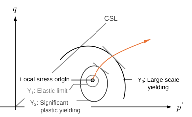
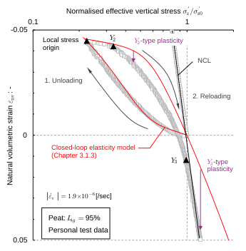
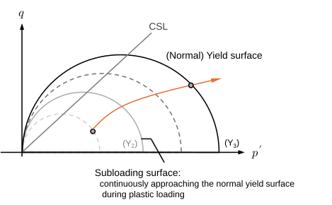

Ch3.2.3
General concept for yielding


Yielding refers to the transition from elastic to (elasto)plastic behaviour. In the case of sands and clays, the transition is not distinct; they show three phases of yielding as schematised in Fig. 3.2.9, according to Jardin, 1992; Kuwano and Jardin, 2007:
- Y1: Boundary within which the soil behaves linearly elastic.
- Y2: Boundary beyond which the stress-strain loop during unload-reload cycles does not close due to significant plastic straining.
- Y3: Boundary beyond which a large-scale yielding occurs (i.e., tangent “elastoplastic stiffness” abruptly changes, effective stress path direction changes under strain-controlled conditions, or strain increment direction changes under stress-controlled conditions).
The critical state represents a particular form of yielding, at which the material behaves as a rigid–plastic body. The multiple yielding is observed in peats. Yamazoe et al. (2014) incorporates a nonlinear stiffness model for predicting the far-field deformation of peat ground based on the multiple-yielding concept.
Also, the result of a 1-D consolidation test, including an unload-reload cycle, shows an effective stress-volumetric loop which does not close, when compared with the closed-loop elasticity model presented in Chapter 3.1.3. This indicates the occurrence of Y2-type plastic straining. The effective stress-volumetric strain path eventually asymptotes to the normal compression line (NCL), represents the one-dimensional manifestation of the Y3 surface. The yield stress expressed by Eq. () in Chapter 3.2.1 thereby corresponds to the Y3 surface.
The conventional soil models (e.g., Cam-Clay in the next section) consistently involve Y3-type plasticity. If the focus is placed on the overconsolidation range, the contribution of Y2-type straining should be accounted for. Stallebrass and Taylor (1997) developed the three-surface kinematic hardening model, adhering to Jardin’s multiple-yielding concept.
The multiple-yielding concept provides a comprehensive framework for understanding soil behaviour; numerous constitutive approaches have been developed, not necessarily with this concept in mind, yet they are consistent with it (e.g., Bounding surface model by Dafalias, 1975; Dafalias and Popov, 1977; Kaliakin and Dafalia, 1990a, 1990b; Bubble surface model by AI-Tabbaa, 1987; Subloading surface model by Hashiguchi, 1989). The subloading surface model (Fig. 3.2.11), for instance, provides a mathematical representation of the multiple-yielding concept, or more precisely, a smooth-yielding behaviour, as a simple extension of the conventional yield surface framework.
